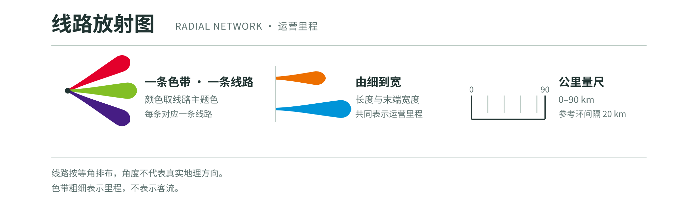
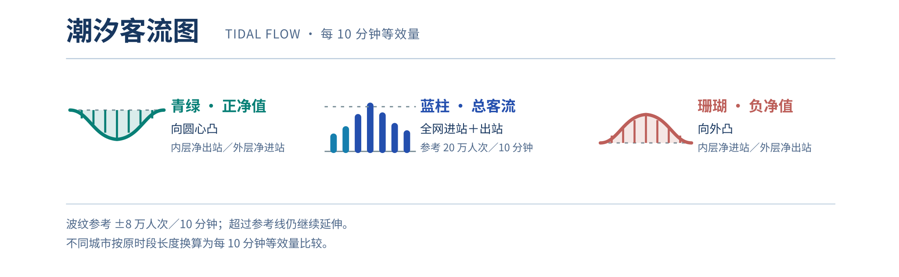
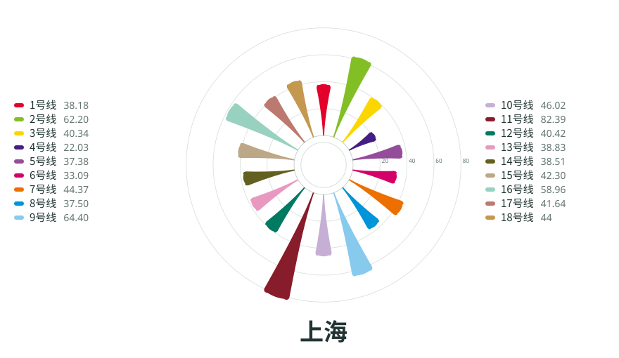
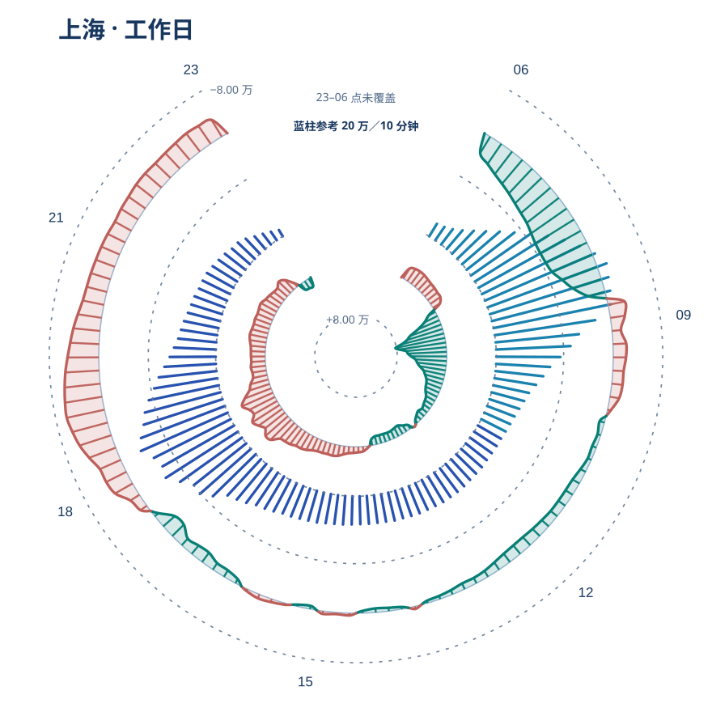

Wiring
the City:
城市里程
五城地铁线网里程
五城邮票
取自原海报的线路图形 · 选择城市继续阅读
城市节律
选择城市，查看线路结构与客流变化


上海 Shanghai / SHA

将鼠标移到色臂或线路名称，查看对应线路。
潮汐客流图
悬停或轻触查看时段 · 再次点击解除锁定
蓝柱零点与内层 −8 万参考弧共线；蓝柱 20 万与外层 +8 万参考弧共线。
24 小时节律
逐小时闸机进出站活动量 · 悬停预览，点击锁定
——
选择柱条查看该时段。
灰色斜纹表示数据未覆盖的时段，不代表零客流。柱高以当前城市、当前日期类型的峰值归一化。
读懂这张图
线路形态与日内潮汐
每条彩色放射带代表一条地铁线路；色带越长、末端越宽，运营里程越长。
内外两层波纹向圆心内凹，表示客流呈向内环汇聚的趋势；向外凸起则表示相反趋势。起伏越大，潮汐越明显。